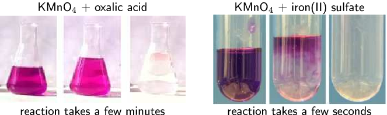

Firstly, let's think about some different types of reactions and how quickly or slowly they occur.
Exercises
Think about each of the following reactions:
(Hint: look at your Grade 11 textbook for a reminder on these processes)
corrosion (e.g. the rusting of iron)
photosynthesis
weathering of rocks (e.g. limestone rocks being worn away by water)
combustion (e.g. propane burning in )
For each of the reactions above, write a balanced chemical equation for the reaction that takes place.
Choosing iron as an example of a metal that rusts:
Photosynthesis:
For weathering of rocks we will use limestone (calcium carbonate) as an example:
Combustion (e.g. of carbon):
Rank these reactions in order from the fastest to the slowest.
Combustion is the fastest and weathering is the slowest. The order of reactivity from fastest to slowest is: combustion, photosynthesis, rusting, weathering.
How did you decide which reaction was the fastest and which was the slowest?
Answers could include mention of the fact that coal and paper burn fast, whereas rocks do not disappear overnight. Also plants use photosynthesis to make food and this process has to happen relatively fast but not too fast.
Think of some other examples of chemical reactions. How fast or slow is each of these reactions, compared with those listed earlier?
Decomposition of hydrogen peroxide, relatively fast
Synthesis of water, very fast
Any other reasonable answers
This video is a simple demonstration of how a change in surface area can affect the average rate of a reaction.
You can see how quickly the fuel burns when spread over the table. Think about how much more fuel would be needed to cook a meal if you had it spread over a large surface area rather than kept in a container with a small surface area.
What is a reaction rate?
In a chemical reaction, the substances that are undergoing the reaction are called the reactants, while the substances that form as a result of the reaction are called the products. The reaction rate describes how quickly or slowly the reaction takes place. So how do we know whether a reaction is slow or fast? One way of knowing is to look either at how quickly the reactants are used during the reaction or at how quickly the products form. For example, iron and sulfur react according to the following equation:
In this reaction, we can observe the speed of the reaction by measuring how long it takes before there is no iron or sulfur left in the reaction vessel. In other words, the reactants have been used. Alternatively, one could see how quickly the iron sulfide (the product) forms. Since iron sulfide looks very different from either of its reactants, this is easy to do.
In another example:
In this case, the reaction rate depends on the speed at which the reactants (oxygen gas and solid magnesium) are used, or the speed at which the product (magnesium oxide) is formed.
Reaction rate
The average rate of a reaction describes how quickly reactants are used or how quickly products are formed during a chemical reaction.
The average rate of a reaction is expressed as the number of moles of reactant used, divided by the total reaction time, or as the number of moles of product formed, divided by the total reaction time.
Average reaction rate for:
the use of a reactant =
the formation of a product =
Using the magnesium reaction shown earlier:
Average reaction rate of Mg being used =
Average reaction rate of being used =
Average reaction rate of MgO being formed =
Reaction rates
The following reaction takes place:
After two minutes, ~ of lithium has been used. Calculate the rate of the reaction.
Calculate the number of moles of lithium that are used in the reaction
~
Calculate the time (in seconds) for the reaction
t = ~ = ~ = ~
Calculate the rate of the reaction
Rate of reaction of used
~
The rate of the reaction is ~
Exercises
A number of different reactions take place. The table below shows the number of moles of reactant that are used in a particular time for each reaction.
Reaction
Reactants used (mol)
Time (s)
Reaction rate
()
Complete the table by calculating the average rate of each reaction.
The reaction rate is the number of moles used up divided by the time in seconds.
Reaction
Reactants used (mol)
Time (s)
Reaction rate
()
Which is the fastest reaction?
The fastest reaction is reaction
Which is the slowest reaction?
The slowest reaction is reaction
Iron reacts with oxygen as shown in the balanced reaction:
~ of and ~ of are used during the reaction. ~ of is produced. The reaction takes ~ to go to completion.
Calculate the average rate of reaction for:
the use of .
M() = ~
~
Rate of reaction is number of moles used up per second.
time = ~ = ~
Average rate of reaction for =
the use of .
M() = = ~
~
Rate of reaction is number of moles used up per second.
Average rate of reaction for =
the formation of .
M() = ~ + ~ = ~
~
Rate of reaction is number of moles produced per second.
Average rate of reaction for =
Note that the rates of the individual reactions follow the stoichiometric rates in the balanced equation:
is
Two reactions occur simultaneously in separate reaction vessels. The reactions are as follows:
After ~, ~ of has been produced in the first reaction.
How many moles of are produced after ~?
M() = ~ + x ~ = ~
= ~
Calculate the average rate of the reaction, using the amount of product that is produced.
time = ~ = ~
Average rate = = ~
Assuming that the second reaction also proceeds at the same rate, calculate:
the number of moles of produced after ~.
n = rate time = ~~ = ~
the minimum mass (in g) of sodium that is needed for this reaction to take place for ~.
For every moles of produced moles of is required.
n() required = ~
M() = ~
m = n M = ~~ = ~
Reaction rates and collision theory
It should be clear now that the average rate of a reaction varies depending on a number of factors. But how can we explain why reactions take place at different speeds under different conditions? Collision theory is used to explain the rate of a reaction.
For a reaction to occur, the particles that are reacting must collide with one another. Only a fraction of all the collisions that take place actually cause a chemical change. These are called successful or effective collisions.
Collision theory
Reactant particles must collide with the correct energy and orientation for the reactants to change into products.
Collision theory explains how chemical reactions occur and why reaction rates differ for different reactions. It states that for a reaction to occur the reactant particles must:
collide
have enough energy
have the right orientation at the moment of impact
These successful collisions and are necessary to break the existing bonds (in the reactants) and form new bonds (in the products).
Collision Theory
Aim
To determine the best way to approach your friend, in order to link your right arm with their left arm.
Determine how hard it is to link arms in each of these positions.
Discussion
If you approach your friend from behind (facing their back) it is hard to link arms. Approaching from their left (sideways so that your right side is on their left), it is easy to link up.
Conclusion
You should have found that each method had a different level of difficulty for linking arms. This is similar to how molecules (compounds) approach in a reaction. The different ways you approached your friend represent the different orientations of the molecules. The correct orientation makes successful collisions possible.
Factors affecting reaction rates
Several factors affect the average rate of a reaction. It is important to know these factors so that reaction rates can be controlled. This is particularly important when it comes to industrial reactions, where greater productivity leads to greater profits for companies. The following are some of the factors that affect the average rate of a reaction.
Nature of reactants
Substances have different chemical properties and therefore react differently, and at different rates (e.g. the rusting of iron vs. the tarnishing of silver).
Oxalic acids are abundant in many plants. The leaves of the tea plant (Camellia sinensis) contain very high concentrations of oxalic acid relative to other plants. Oxalic acid also occurs in small amounts in foods such as parsley, chocolate, nuts and berries. Oxalic acid irritates the lining of the gut when it is eaten, and can be fatal in very large doses.
In the nature of reactants, surface area and concentration experiments learners are required to work with concentrated, strong acids. These acids can cause serious burns. Please remind the learners to be careful and wear the appropriate safety equipment when handling all chemicals, especially concentrated acids. The safety equipment includes gloves, safety glasses and protective clothing.
The nature of reactants
Aim
To determine the effect of the nature of reactants on the average rate of a reaction.
Apparatus
You will need the following items for this experiment:
a spatula, two test tubes, a medicine dropper, a glass beaker and a glass rod.
Method
Concentrated can cause serious burns. We suggest using gloves and safety glasses whenever you work with an acid. Remember to add the acid to the water and to avoid sniffing the acid. Handle all chemicals with care.
Label one test tube . Prepare an iron(II) sulfate solution in test tube by dissolving two spatula tips of iron(II) sulfate in ~ of water.
Prepare a separate solution of sulfuric acid by adding ~ of the concentrated acid to ~ of water. Remember always to add the acid to the water, and never the other way around.
Using the medicine dropper, add a few drops of potassium permanganate to the two test tubes. Observe how quickly the potassium permanganate solution discolours in each solution.
You should have seen that the the potassium permanganate discolours in the oxalic acid solution much more slowly than in the iron(II) sulfate solution.

<code>
(-5.8,-1.7)(5.6,1.8)
\rput(-3,0){\includegraphics{photos/KMnO4Oxalic.eps}}
\rput(-3,1.5){KMnO$_{4}$ + oxalic acid}
\rput(-3,-1.5){reaction takes a few minutes}
\rput(3,0){\scalebox{0.8}[0.8]{\includegraphics{photos/KMnO4IronSulfate.eps}}}
\rput(3,1.5){KMnO$_{4}$ + iron(II) sulfate}
\rput(3,-1.5){reaction takes a few seconds}
</code>
These reactions can be seen in the following videos:
It is the oxalate ions and the ions that cause the discolouration. It is clear that the ions react much more quickly with the permanganate than the ions. The reason for this is that there are no covalent bonds to be broken in the iron ions before the reaction can take place. In the case of the oxalate ions, covalent bonds between carbon and oxygen atoms must be broken first.
Conclusions
Despite the fact that both these reactants (oxalic acid and iron(II) sulfate) are in aqueous solutions, with similar concentrations and at the same temperature, the reaction rates are very different. This is because the nature of the reactants can affect the average rate of a reaction.
The nature of the iron(II) sulfate in solution (iron ions, ready to react) is very different to the nature of oxalic acid in solution (oxalate ions with covalent bonds that must be broken). This results in significantly different reaction rates.
The with oxalic acid and iron(II) sulfate pictures are screenshots from videos by katalofuromai and Aaron Huggard on Youtube.
Surface area (of solid reactants)
Surface area and reaction rate
Marble reacts with hydrochloric acid to form calcium chloride, water and carbon dioxide gas according to the following equation:
Aim
To determine the effect of the surface area of reactants on the average rate of the reaction.
Concentrated can cause serious burns. We suggest using gloves and safety glasses whenever you work with an acid. Remember to add the acid to the water and handle with care.
Prepare a solution of hydrochloric acid in the beaker by adding ~ of the concentrated acid to ~ of water.
Place the marble chips into one test tube and the powdered marble into a separate test tube.
Add ~ of the dilute hydrochloric acid to each of the test tubes and observe the rate at which carbon dioxide gas () is produced (you should see bubbles of ).
Results
Note (write down) what you observe.
Questions and discussion
Which reaction proceeds faster?
Can you explain this?
Conclusion
The reaction with powdered marble is faster. The smaller the pieces of marble are (in this case the powdered form is smallest), the greater the surface area for the reaction to take place.
Only the molecules at the surface of the solid can react with the hydrochloric acid. The next layer of molecules can only react once the surface molecules have reacted. That is, the next layer of molecules becomes the surface.
The chips of marble are relatively large, so only a small percentage of the molecules are at the surface and can react initially. The powdered marble has much smaller solid pieces, so there are many more surface molecules exposed to the hydrochloric acid. The more molecules exposed on the surface (the greater the surface area) the faster the reaction will be.
Calcium carbonate reacts with hydrochloric acid according to the following reaction:
Consider the solid calcium carbonate.
If we react ~ of we find that the reaction is faster if the is powdered when compared with the being large lumps.
Explanation:
The large lump of has a small surface area relative to the same mass of powdered . This means that more particles of will be in contact with in the powdered than in the lumps. As a result, there can be more successful collisions per unit time and the reaction of powdered is faster.
The following video shows the effect of surface area on the time an effervescent tablet takes to fully dissolve. The tablet is fully dissolved once the bubbles ( gas) stop forming.
Surface area, concentration and pressure all have the same effect on reaction rate (an increase leads to a faster reaction rate). This is because in each case an increase in the property leads to an increase in the number of collisions in that phase of matter.
As the concentration of the reactants increases, so does the reaction rate.
<code>
(-4.5,-14.3)(1.3,5)
\rput(0,2){
\pstTubeEssais[niveauLiquide1=40,aspectLiquide2=Sang,niveauLiquide2=10]
\rput(-4.5,0.15){\Large 1 part red}
\psline[linewdith=2.5pt]{->}(-2.8,1)(-1.5,1)
\rput(-4.5,1){\Large 10 parts blue}
\psline[linewdith=2.5pt]{->}(-2.8,0.15)(-1.5,0.15)
}
\rput(0,-2){
\pstTubeEssais[niveauLiquide1=80,aspectLiquide2=Sang,niveauLiquide2=20]
\rput(-4.5,0.15){\Large 2 parts red}
\psline[linewdith=2.5pt]{->}(-2.8,1)(-1.5,1)
\rput(-4.5,1){\Large 20 parts blue}
\psline[linewdith=2.5pt]{->}(-2.8,0.15)(-1.5,0.15)
}
\rput(-1.5,4.6){\textbf{\Large both solutions have}}
\rput(-1.5,4.1){\textbf{\Large the same concentration}}
\rput(0,-10){
\rput(0,2){
\pstTubeEssais[niveauLiquide1=40,aspectLiquide2=Sang,niveauLiquide2=10]
\rput(-4.5,0.15){\Large 1 part red}
\psline[linewdith=2.5pt]{->}(-2.8,1)(-1.5,1)
\rput(-4.5,1){\Large 10 parts blue}
\psline[linewdith=2.5pt]{->}(-2.8,0.15)(-1.5,0.15)
}
\rput(0,-2){
\pstTubeEssais[niveauLiquide1=75,aspectLiquide2=Sang,niveauLiquide2=10]
\rput(-4.5,0.15){\Large 1 part red}
\psline[linewdith=2.5pt]{->}(-2.8,1)(-1.5,1)
\rput(-4.5,1){\Large 20 parts blue}
\psline[linewdith=2.5pt]{->}(-2.8,0.15)(-1.5,0.15)
}
\rput(-1.5,4.6){\textbf{\Large these solutions have}}
\rput(-1.5,4.1){\textbf{\Large different concentrations}}
}
</code>
Concentration and reaction rate
Aim
To determine the effect of reactant concentration on reaction rate.
Apparatus
Concentrated hydrochloric acid , magnesium ribbon
Two beakers, two test tubes and a measuring cylinder.
Method
Do not get hydrochloric acid () on your hands. We suggest you use gloves and safety glasses whenever handling acids and handle with care.
When diluting a solution remember that if you want a 1:10 solution (1 part original solution in 10 parts water) measure ~ of water in a measuring cylinder and pour it into a beaker, then add ~ of the original solution to the beaker as well. parts concentrated acid to parts water will also be a 1:10 solution. Remember to always add the acid to the water, and not the other way around.
Prepare a solution of 1 part acid to 10 parts water (1:10). Label a test tube A and pour ~ of this solution into the test tube.
Prepare a solution of 1 part acid to 20 parts water (1:20). Label a test tube B and pour ~ of this solution into the test tube.
Take two pieces of magnesium ribbon of the same length. At the same time, put one piece of magnesium ribbon into test tube A and the other into test tube B, and pay close attention to what happens.
Make sure that the magnesium ribbon is long enough so that your hand is not close to the .
Write down what happened (what did you observe?) in each test tube.
Questions and discussion
Which of the two solutions is more concentrated, the : or : hydrochloric acid solution?
In which of the test tubes is the reaction faster? Suggest a reason for this.
How can you measure the average rate of this reaction?
Name the gas that is produced?
Why is it important that the same length of magnesium ribbon is used for each reaction?
Conclusions
The : solution is more concentrated and therefore this reaction proceeds faster. The greater the concentration of the reactants, the faster the average rate of the reaction. The average rate of the reaction can be measured by the rate at which the magnesium ribbon disappears.
The greater concentration of the reactant means that there are more particles of reactant () per unit volume of solution. Therefore the chance that particles will collide with the particles will be higher for the solution with the greater concentration. The number of successful collisions per unit time will be higher and so the rate of the reaction will be faster.
In this project the learners should design their own experiment in the following format:
Aim
Apparatus
Method
They can also perform the experiment and write up results and conclusions as well.
This experiment should focus on the effect of concentration on the rate. The easiest way to do this is to vary the concentration of the vinegar and keep the mass of baking soda constant.
Concentration and rate
Design an experiment to determine the effect of concentration on rate using vinegar and baking soda.
Hint: mix water and vinegar to change concentration but keep the total volume constant.
Pressure (of gaseous reactants)
As the pressure of the reactants increase, so does the reaction rate.
The higher the pressure, the more particles of gas per unit volume. Therefore there are more collisions per unit time. The number of successful collisions per unit time will be higher and so the rate of the reaction will be faster.
If the temperature of the reaction increases, so does the average rate of the reaction.
In the temperature and reaction rate experiment make sure the learners do not shake the test tubes. Shaking gives energy to the reaction and affects the rate. The test tubes should be left as still as possible once the effervescent tablets have been added.
Plastic bottles, such as those shown in the picture, can be used instead of test tubes.
Temperature and reaction rate
Aim
To determine the effect of temperature on reaction rate.
Apparatus
Two effervescent tablets (e.g. Cal-C-Vita)
An ice-bath, two test tubes
Two balloons, two rubber bands
Method
Half fill two large test tubes with water. Label them A and B.
Break two effervescent tablets in two or three pieces and place them in the two balloons.
Fit one of these balloons tightly to test tube A and one to test tube B, being careful not to drop the contents into the water. You can stand the test tube in a beaker to help you do this.
Place only test tube A into an ice-bath and leave to equilibrate (come to the same temperature). Approximately 10 minutes should be enough.
At the same time lift the balloons on test tubes A and B so that the tablets go into the water. Do not shake either test tube.
(g) is released during this reaction.
Observe how quickly the balloons increase in size and write down your observations (which increases in size faster).
Results
Note (write down) your observations.
Questions and discussion
Which balloon expanded faster?
Suggest a reason for the difference in rates.
Conclusions
The balloon on test tube B will expand faster. This is because the higher temperature (room temperature rather than an ice bath) leads to an increase in the average rate of gas production.
The video below shows how much pressure can build up when (g) is released during the reaction of an effervescent tablet with water.
The higher the temperature, the greater the average kinetic energy of the particles, which means that the particles are moving faster.
Therefore:
particles moving faster means more collisions per unit time (collision theory)
particles with higher kinetic energy are also more likely to react on colliding as they have enough energy for the reaction to occur (see Section 1.4 on the mechanism of reaction).
Adding a catalyst increases the reaction rate by lowering the energy required for a successful reaction to take place. A catalyst speeds up a reaction and is released at the end of the reaction, completely unchanged.
In the first catalyst and reaction rate experiment (with manganese dioxide and hydrogen peroxide) it is important to note that hydrogen peroxide can cause burns. The learners should wear safety equipment, as always when handling chemicals. If the concentration of hydrogen peroxide is too high the liquid hydrogen peroxide may splash out of the container along with the oxygen gas. As a result the learners should be particularly careful around the mouth of the containers.
In the second experiment the learners are again working with a strong acid and should follow all the usual safety procedures.
Catalysts and reaction rate
Aim
Hydrogen peroxide decomposes slowly over time into water and oxygen. The aim of this experiment is to determine the effect a catalyst has on the reaction rate.
Be careful when handling as it can burn you. We recommend wearing gloves and safety glasses.
Pour ~ into two seperate containers.
Add a spatula tip of yeast to one container.
Time how long it takes for the bubbles to stop.
Repeat with in the second container.
Compare the effect of the two catalysts.
The balanced equation for this reaction is:
This can also be written:
before the addition of (left) and after the addition of (right).
Results
Which chemical compounds are acting as catalysts in these reactions?
What causes the bubbles that form in the reaction?
Conclusions
The bubbles that form are oxygen gas formed through the decomposition of hydrogen peroxide. This would happen over time without the presence of the catalyst. The manganese dioxide speeds up the reaction significantly. The yeast speeds up the reaction, but not as much as the manganese dioxide.
To determine the effect of a catalyst on the average rate of a reaction
Apparatus
Zinc granules, ~ hydrochloric acid, copper pieces
One test tube, a glass beaker, tongs
Method
Do not get hydrochloric acid () on your hands. We suggest you use gloves and safety glasses whenever handling acids. Be especially careful when removing the copper pieces from the test tube.
Place a few of the zinc granules in the test tube, using tongs.
Measure the mass of a few pieces of copper and, using tongs, keep them separate from the rest of the copper.
Add ~ of to the test tube. You will see that a gas is released. Take note of how quickly or slowly this gas is released (use a stopwatch or your cellphone to time this). Write a balanced chemical equation for the chemical reaction that takes place.
Now add the copper pieces to the same test tube. What happens to the rate at which the gas is produced?
Carefully remove the copper pieces from the test tube (use tongs), rinse them in water and alcohol and then weigh them again. Has the mass of the copper changed since the start of the experiment?
Results
During the reaction, the gas that is released is hydrogen. The rate at which the hydrogen is produced increases when the copper pieces (the catalyst) are added. The mass of the copper does not change during the reaction.
Conclusions
The copper acts as a catalyst during the reaction. It speeds up the average rate of the reaction, but is not changed itself in any way.
We will return to catalysts in more detail once we have explored the mechanism of reactions later in this chapter.
In the iodine clock experiment it is important that the learners start timing the experiment as soon as the sulfuric acid and hydrogen peroxide solution is added to the potassium iodide solution. There should be a sudden colour change from colourless to purple when the sodium thiosulfate is used up and free iodine is available in the solution. The free iodine is what gives the reaction the purple colour.
This experiment is best done in groups ( - if often a good size). You can divide your class into groups and assign each group a different experiment. Afterwards the groups can present their results and conclusions to the class. If you have time you can also vary the concentration of the hydrogen peroxide.
As always, learners need to work carefully with acids, in particular with the concentrated acids. Remind them to always add the acid to the water.
Temperature, concentration and reaction rate
Aim
To determine the effect of temperature and concentration on the average reaction rate of the iodine clock experiment. This experiment is best done in groups.
Five beakers, a measuring cylinder, a hotplate, an ice bath, a glass stirring rod, a stop-watch
Method
Preheat the hotplate to ~
Label a beaker solution 1. Measure ~ into the beaker. Add ~% . Remember to use dilute (~) sulfuric acid.
The equations for what is occuring in this reaction are given below:
It is good scientific practice to vary only one factor at a time during an experiment. Therefore, this experiment has two parts. First we will vary the concentration of , then we will vary the temperature:
Add a spatula of soluble starch to beaker C and stir with a glass rod.
Measure ~ of solution 1 with the measuring cylinder.
Place beaker C in the ice bath.
Get your stopwatch ready. Pour the ~ of solution 1 into beaker C and start timing. Stop timing when the solution starts to change colour. Write down your time in the table below.
Repeat steps 1 - 4 (label the beaker D).
Place beaker D on the hotplate. Then repeat step 6
Beaker
Concentration (M)
Temperature (℃)
Time (s)
A
approx. 0.15
room temperature
C
approx. 0.15
0
D
approx. 0.15
40
Beaker A has been included here because it has the same concentration as beakers C and D, but is at a different temperature.
Results
Make a table with the information for all the beakers. Include columns for concentration, temperature, time, and reaction rate.
Questions and discussion
Did beaker A or B have the faster reaction rate?
Why did it have a faster reaction rate?
Did beaker A, C or D have the fastest reaction rate? Why?
Did beaker A, C or D have the slowest reaction rate? Why?
Conclusions
You will notice that the faster reaction rate occurs in the beaker with the higher concentration of . You should also see that the higher the temperature, the faster the reaction rate.
This video shows how this experiment can be used as a clock with the concentration chosen so that the experiment changes colour at a specific time (or with a particular part of a song). This is why this experiment is known as the iodine clock reaction.
Time = 1 minute. This is where the the gradient of a tangent to the graph is the steepest (the red line on the graph). The steeper the gradient the faster the rate at that time.
Suggest a reason why the reaction slows down over time.
As the reaction proceeds the reactants are used up (form products). With a lower concentration of reactants the rate of the reaction decreases.
Use the graph to estimate the volume of gas that will have been produced after 11 minutes.
Approximately ~
How long do you think the reaction will take to stop (give a time in minutes)?
Any answer between 15 and 25 minutes is reasonable. To see this extend the line and find approximate the time that the gradient flattens out.
If the experiment was repeated using a more concentrated hydrochloric acid solution:
would the average rate of the reaction increase or decrease from the one shown in the graph?
The rate would increase.
draw a line on the same set of axes to show how you would expect the reaction to proceed with a more concentrated solution.
The red line indicates roughly how the reaction would proceed. Note that the reaction does not produce more carbon dioxide, it just reacts faster.